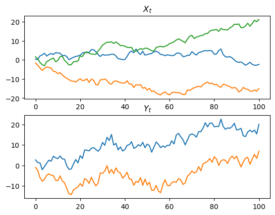
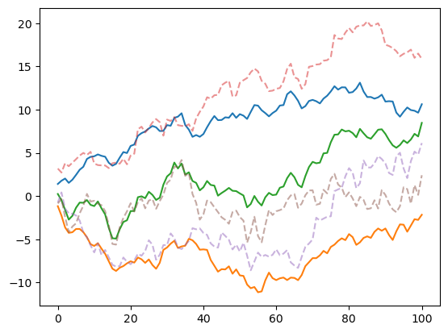

m, p, n = 3, 2, 100
A = jnp.broadcast_to(jnp.eye(m), (n, m, m))
B = jnp.broadcast_to(jnp.array([[1, 0, 1], [0, 1, 1]]), (n + 1, p, m))
s2, omega2 = 1, 1
Sigma = jnp.broadcast_to(s2 * jnp.eye(m), (n + 1, m, m))
Omega = jnp.broadcast_to(omega2 * jnp.eye(p), (n + 1, p, p))
x0 = jnp.zeros(m)
key = jrn.PRNGKey(53412312)
key, subkey = jrn.split(key)
(X, ), (Y,) = simulate_glssm(x0, A, B, Sigma, Omega, 1, subkey)Gaussian Linear State Space Models
Simulation and components
Consider a gaussian state space model of the form \[ \begin{align*} X_0 &\sim \mathcal N (x_0, \Sigma_0) &\\ X_{t + 1} &= A_t X_{t} + \varepsilon_{t + 1} &t = 0, \dots, n - 1\\ \varepsilon_t &\sim \mathcal N (0, \Sigma_t) & t = 1, \dots, n \\ Y_t &= B_t X_t + \eta_t & t =0, \dots, n & \\ \eta_t &\sim \mathcal N(0, \Omega_t) & t=0, \dots, n. \end{align*} \] As the joint distribution of \((X_0, \dots, X_n, Y_0, \dots, Y_n)\) is gaussian, we call it a Gaussian linear state space model (GLSSM).
Sampling from the joint distribution
To obtain a sample \((X_0, \dots, X_n), (Y_0, \dots, Y_n)\) we first simulate from the joint distribution of the states and then, as observations are coniditionally independent of one another given the states, simulate all states at once.
simulate_states
simulate_states (x0:jaxtyping.Float[Array,'m'], A:jaxtyping.Float[Array,'nmm'], Sigma:jaxtyping.Float[Array,'n+1mm'], N:int, key:Union[j axtyping.Key[Array,''],jaxtyping.UInt32[Array,'2']])
Simulate states of a GLSSM
| Type | Details | |
|---|---|---|
| x0 | Float[Array, ‘m’] | initial mean \(\mathbf E \left( X_0 \right)\) |
| A | Float[Array, ‘n m m’] | transition matrices \(A_t\), \(t = 0, \dots, n-1\) |
| Sigma | Float[Array, ‘n+1 m m’] | covariance matrices of innovations \(\Sigma_t\), \(t = 0, \dots, n\) |
| N | int | number of samples to draw |
| key | Union | the random state |
| Returns | Float[Array, ‘N n+1 m’] | an array of N samples from the state distribution |
simulate_glssm
simulate_glssm (x0:jaxtyping.Float[Array,'m'], A:jaxtyping.Float[Array,'nmm'], B:jaxtyping.Float[Array,'n+1pm'], Sigma:jaxtyping.Float[Array,'n+1mm'], Omega:jaxtyping.Float[Array,'n+1pp'], N:int, key:Union[ja xtyping.Key[Array,''],jaxtyping.UInt32[Array,'2']])
Simulate states and observations of a GLSSM
| Type | Details | |
|---|---|---|
| x0 | Float[Array, ‘m’] | initial mean \(\mathbf E X_0\) |
| A | Float[Array, ‘n m m’] | transition matrices \(A_t\), \(t = 0, \dots, n - 1\) |
| B | Float[Array, ‘n+1 p m’] | observation matrices \(B_t\), \(t = 0, \dots, n\) |
| Sigma | Float[Array, ‘n+1 m m’] | covariance matrices of innovations \(\Sigma_t\), \(t = 0, \dots, n\) |
| Omega | Float[Array, ‘n+1 p p’] | covariance matrices of errors \(\Omega_t\), \(t=0, \dots, n\) |
| N | int | number of sample paths |
| key | Union | the random state |
| Returns | (<class ‘jaxtyping.Float[Array, ’N n+1 m’]’>, <class ‘jaxtyping.Float[Array, ’N n+1 p’]’>) | a tuple of two arrays each with of N samples from the state/observation distribution |
fig, (ax1, ax2) = plt.subplots(2)
ax1.set_title("$X_t$")
ax1.plot(X)
ax2.set_title("$Y_t$")
ax2.plot(Y)
plt.show()
Sampling from the smoothing distribution
After having run the Kalman filter we can use a recursion due to Frühwirth-Schnatter (Frühwirth-Schnatter 1994) to obtain samples from the joint conditional distribution the states given observations.
By the dependency structure of states and observations the conditional densities can be factorized in the following way:
\[ \begin{align*} p(x_0, \dots, x_n | y_0, \dots, y_n) &= p(x_n | y_0, \dots, y_n) \prod_{t = n - 1}^0 p(x_{t}| x_{t + 1}, \dots, x_n, y_0, \dots, y_n) \\ &= p(x_n | y_0, \dots, y_n) \prod_{t = n - 1}^0 p(x_{t}| x_{t + 1}, y_0, \dots, y_n) \end{align*} \]
and the conditional distributions are again gaussian with conditional expecatation \[ \mathbf E (X_{t} | X_{t + 1}, Y_0, \dots, Y_n) = \hat X_{t|t} + G_t (X_{t + 1} - \hat X_{t + 1|t}) \] and conditional covariance matrix \[ \text{Cov} (X_t | X_{t + 1}, Y_0, \dots, Y_n) = \Xi_{t|t} - G_t\Xi_{t + 1 | t} G_t^T \]
where \(G_t = \Xi_{t|t} A_t^T \Xi_{t + 1|t}^{-1}\) is the smoothing gain.
FFBS
FFBS (y:jaxtyping.Float[Array,'n+1m'], x0:jaxtyping.Float[Array,'m'], Sigma:jaxtyping.Float[Array,'n+1mm'], Omega:jaxtyping.Float[Array,'n+1pp'], A:jaxtyping.Float[Array,'nmm'], B:jaxtyping.Float[Array,'n+1pm'], N:int, key:Union[jaxtyping.Key[Array,''],jaxtyping.UInt32[Array,'2']])
*The Forward-Filter Backwards-Sampling Algorithm
From (Frühwirth-Schnatter 1994).*
| Type | Details | |
|---|---|---|
| y | Float[Array, ‘n+1 m’] | Observations \(y\) |
| x0 | Float[Array, ‘m’] | initial mean \(\mathbf E X_0\) |
| Sigma | Float[Array, ‘n+1 m m’] | innovation covariances \(\Sigma_t\) |
| Omega | Float[Array, ‘n+1 p p’] | errors \(\Omega_t\) |
| A | Float[Array, ‘n m m’] | transition matrices \(A_t\) |
| B | Float[Array, ‘n+1 p m’] | observation matrices \(B_t\) |
| N | int | number of samples |
| key | Union | random state |
| Returns | Float[Array, ‘N n+1 m’] | an array of N samples from the smoothing distribution |
simulate_smoothed_FW1994
simulate_smoothed_FW1994 (x_filt:jaxtyping.Float[Array,'n+1m'], Xi_filt:jaxtyping.Float[Array,'n+1mm'], Xi_pred:jaxtyping.Float[Array,'n+1mm'], A:jaxtyping.Float[Array,'nmm'], N:int, key:Unio n[jaxtyping.Key[Array,''],jaxtyping.UInt32[Arra y,'2']])
Simulate from smoothing distribution \(p(X_0, \dots, X_n|Y_0, \dots, Y_n)\)
| Type | Details | |
|---|---|---|
| x_filt | Float[Array, ‘n+1 m’] | filtered states \(\hat X_{t\vert t}\) |
| Xi_filt | Float[Array, ‘n+1 m m’] | filtered covariance matrices \(\Xi_{t\vert t}\), \(t=0,\dots,n\) |
| Xi_pred | Float[Array, ‘n+1 m m’] | prediction covariance matrices \(\Xi_{t + 1 \vert t}\), \(t=0, \dots, n-1\) |
| A | Float[Array, ‘n m m’] | transition matrices \(A_t\), \(t=0,\dots,n-1\) |
| N | int | number of samples |
| key | Union | the random states |
| Returns | Float[Array, ‘N n+1 m’] | an array of N samples from the smoothing distribution |
x_filt, Xi_filt, x_pred, Xi_pred = kalman(Y, x0, Sigma, Omega, A, B)
key, subkey = jrn.split(key)
X_sim, = simulate_smoothed_FW1994(x_filt, Xi_filt, Xi_pred, A, 1, subkey)
assert X_sim.shape == (n + 1, m)x_smooth, Xi_smooth = smoother(x_filt, Xi_filt, x_pred, Xi_pred, A)
plt.plot(x_smooth)
plt.plot(X_sim, alpha=.5, linestyle="dashed")
plt.show()
Joint Density
By the dependency structure of the model, the joint density factorizes as
\[ p(x,y) = \prod_{t = 0}^n p(x_{t}| x_{t -1}) p(y_{t}|x_{t}) \] where \(p(x_0|x_{-1}) = p(x_0)\). The following functions return these components or evaluate the joint density directly.
log_prob
log_prob (x:jaxtyping.Float[Array,'n+1m'], y:jaxtyping.Float[Array,'n+1p'], x0:jaxtyping.Float[Array,'m'], A:jaxtyping.Float[Array,'nmm'], B:jaxtyping.Float[Array,'n+1pm'], Sigma:jaxtyping.Float[Array,'n+1mm'], Omega:jaxtyping.Float[Array,'n+1pp'])
log_probs_y
log_probs_y (y:jaxtyping.Float[Array,'n+1p'], x:jaxtyping.Float[Array,'n+1m'], B:jaxtyping.Float[Array,'n+1pm'], Omega:jaxtyping.Float[Array,'n+1pp'])
| Type | Details | |
|---|---|---|
| y | Float[Array, ‘n+1 p’] | the observations |
| x | Float[Array, ‘n+1 m’] | the states |
| B | Float[Array, ‘n+1 p m’] | observation matrices |
| Omega | Float[Array, ‘n+1 p p’] | error covariances |
| Returns | Float[Array, ‘n+1’] | log probabilities \(p(y_t \| x_t)\) |
log_probs_x
log_probs_x (x:jaxtyping.Float[Array,'n+1m'], x0:jaxtyping.Float[Array,'m'], A:jaxtyping.Float[Array,'nmm'], Sigma:jaxtyping.Float[Array,'n+1mm'])
| Type | Details | |
|---|---|---|
| x | Float[Array, ‘n+1 m’] | the states |
| x0 | Float[Array, ‘m’] | initial mean |
| A | Float[Array, ‘n m m’] | transition matrices |
| Sigma | Float[Array, ‘n+1 m m’] | innovation covariances |
| Returns | Float[Array, ‘n+1’] | log probabilities \(p(x_t \| x_{t-1})\) |
fct.test_eq(log_probs_x(X, x0, A, Sigma).shape, (n+1,))
fct.test_eq(log_probs_y(Y, X, B, Omega).shape, (n+1,))
fct.test_eq(log_prob(X, Y, x0, A, B, Sigma, Omega).shape, ())References
Frühwirth-Schnatter, Sylvia. 1994. “Data Augmentation and Dynamic Linear Models.” Journal of Time Series Analysis 15 (2): 183–202. https://doi.org/10.1111/j.1467-9892.1994.tb00184.x.